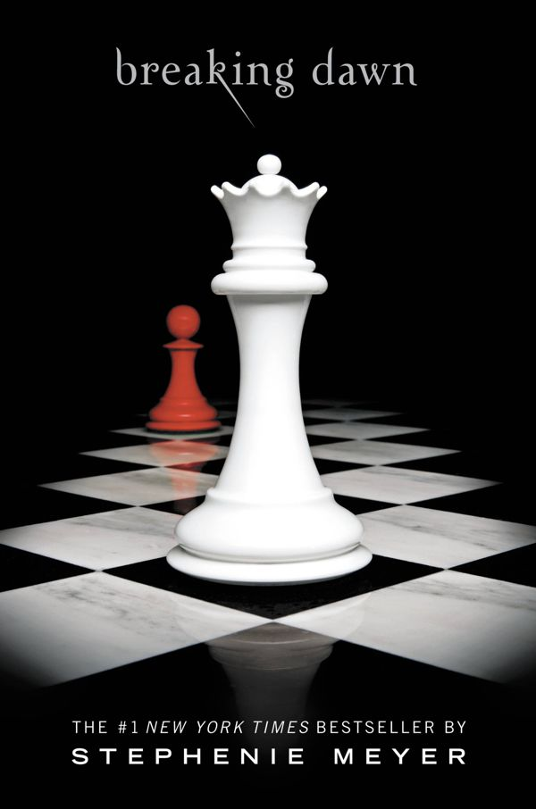

Breaking Dawn
by Stephenie Meyer, 2008
- Part of
- The Twilight Saga (#4)
- Description
- When you loved the one who was killing you, it left you no options. How could you run, how could you fight, when doing so would hurt that beloved one? If your life was all you had to give, how could you not give it? If it was someone you truly loved?
To be irrevocably in love with a vampire is both fantasy and nightmare woven into a dangerously heightened reality for Bella Swan. Pulled in one direction by her intense passion for Edward Cullen, and in another by her profound connection to werewolf Jacob Black, a tumultuous year of temptation, loss, and strife have led her to the ultimate turning point. Her imminent choice to either join the dark but seductive world of immortals or to pursue a fully human life has become the thread from which the fates of two tribes hangs.
Now that Bella has made her decision, a startling chain of unprecedented events is about to unfold with potentially devastating, and unfathomable, consequences. Just when the frayed strands of Bella's life-first discovered in Twilight, then scattered and torn in New Moon and Eclipse-seem ready to heal and knit together, could they be destroyed... forever?
The astonishing, breathlessly anticipated conclusion to the Twilight Saga, Breaking Dawn illuminates the secrets and mysteries of this spellbinding romantic epic that has entranced millions. - Publication
- Little, Brown and Company
- Publication date
- August 02, 2008
- ISBN
- 9780316067928, 031606792X
- Call number
- 813.6